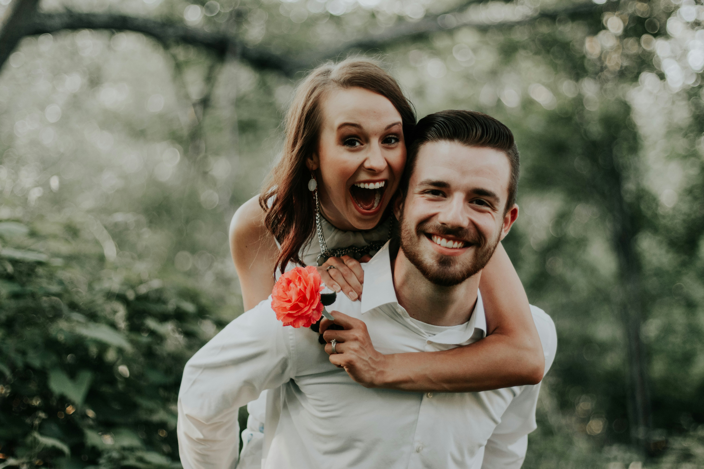
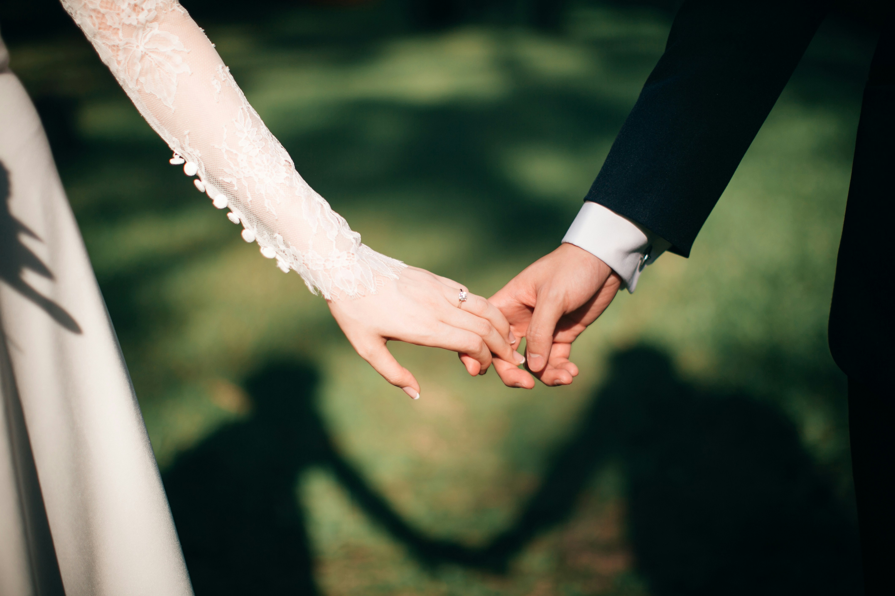
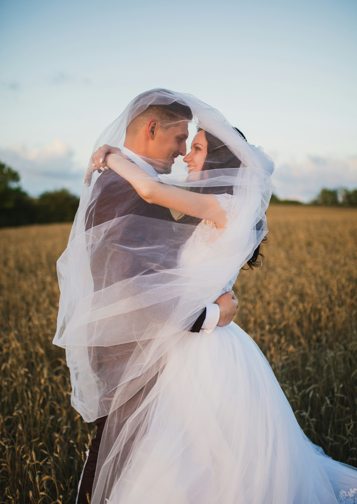

Serviços
Cada ocasião pede um tom diferente. Estas são as formas como Breno costuma entrar em cena.

Cerimônia de casamento
Roteiro escrito com o casal e condução completa da cerimônia, do cortejo à saída, com atenção a cada detalhe combinado.

Cerimônia civil e religiosa
Adaptação do roteiro ao rito, às tradições da família e às exigências do celebrante ou autoridade responsável.

Renovação de votos
Uma celebração pensada para casais que querem reafirmar a união, com um texto que conta a história vivida até aqui.
Eventos corporativos
Abertura e condução de convenções, formaturas e premiações, com o tom certo para o público e para a marca.

Batizados e bodas
Discursos e roteiros sob medida para celebrações em família, respeitando o ritmo e as tradições de cada uma.
Curadoria de roteiro
Para quem já tem um mestre de cerimônias, mas quer um texto mais cuidado: Breno escreve e ensaia o roteiro com a equipe.